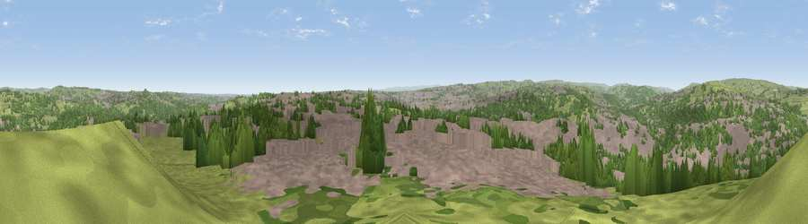

Viewpoint near Wrose
#7844 in England · top 4% of its area beats it · near WroseThe view, rendered

A 360° render of this exact spot computed from the terrain model, tree cover and land cover — summer colours, afternoon light, calibrated against photographs of famous viewpoints. Real trees, hedges and buildings will differ in detail.
The panorama
Grey silhouette: terrain skyline in each direction (720 bearings, Earth curvature and refraction included). Dashed green: skyline with trees (+15 m) and buildings (+8 m) as obstacles. Blue strip: how far the ground is visible on each bearing.
Where the view opens
Wedge length = distance to the farthest visible ground on that bearing (vegetation-aware). Rings at 10, 25 and 50 km.
What fills the view
45% built-up · 30% woodland · 24% grassland
Angular shares of the visible panorama (visual magnitude), not map area. Landscape diversity 0.47 (0–1 Shannon).
Key numbers
More beautiful places nearby
The staircase of upgrades: each row has a higher view potential than everything closer. Driving times are estimates from straight-line distance, calibrated against real road routing — check an actual route before setting out.
| Place | Direction | Drive | Score |
|---|---|---|---|
| Viewpoint near Baildon | NW · 3 km | ~8 min | 70.4 |
| Rawdon Billing | ENE · 6 km | ~12 min | 73.0 |
| Viewpoint near Otley | NNE · 8 km | ~16 min | 77.5 |
| Viewpoint near East Witton | N · 48 km | ~68 min | 77.8 |
| Darwen Hill | WSW · 51 km | ~72 min | 80.7 |
| White Brow | WSW · 56 km | ~78 min | 82.9 |
| Beacon Hill | NNE · 69 km | ~92 min | 84.7 |
| Carlton Bank | NNE · 74 km | ~98 min | 85.1 |
53.83204, -1.75116 · source: screening · position refined by local search. Computed location — check access rights before visiting.